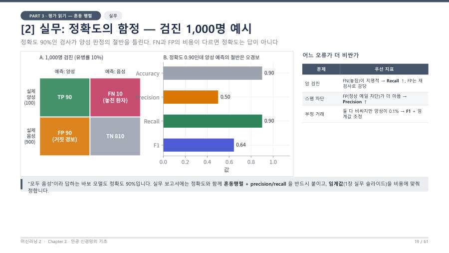

정확도의 함정 — 불균형 데이터와 "모두 음성" 모델 ★
병에 걸린 사람이 전체의 10%뿐인 상황(유병률 10%)을 생각해 봐요. 그런데 어떤 바보 모델이 환자를 한 번도 찾지 않고 무조건 "음성(정상)"이라고만 답해요.
- 정확도 = (0+900)/1000 = 0.9, 겉보기에는 아주 훌륭해요.
- 재현율 = 0/(0+100) = 0, 환자를 단 한 명도 못 찾았어요.
- 정밀도 = 0/0이라 계산할 수 없어요(양성이라고 한 적이 없으니까요). 보통 0으로 처리해요.
유병률이 1%라면 같은 바보 모델의 정확도는 0.99까지 올라가요. 왜 이럴까요? 정확도는 "맞힌 개수 ÷ 전체"라서, 숫자가 많은 쪽(음성)을 다 맞히기만 해도 높게 나와요. 클래스 수가 한쪽으로 쏠린 것을 클래스 불균형이라고 해요.

도둑이 하루 100명 중 1명뿐인 마을에서 "도둑은 한 명도 없다"고만 말하는 경비원은 99%를 맞혀요. 하지만 진짜 도둑은 한 번도 못 잡아요. 쓸모없는 경비원인데 점수만 높은 거예요.
그래서 실무 보고서에는 정확도만 쓰지 않고 혼동행렬과 정밀도·재현율을 함께 붙여요. 교수님은 "정확도만 적으면 듣는 사람이 뭘 숨기냐고 의심한다"고 했어요.
유병률이 낮은 불균형 데이터에서는 모든 샘플을 음성으로 예측하는 모델도 정확도가 높게 나온다(유병률 10%이면 0.9). 그러나 재현율은 0이므로 정확도만으로 성능을 판단할 수 없고, 혼동행렬과 정밀도·재현율을 함께 확인해야 한다.
잠깐 확인 — 유병률 5%인 병에서 "모두 음성"이라고 답하는 모델의 정확도와 재현율은?
정확도는 0.95, 재현율은 0이에요. 환자 5%를 하나도 못 찾았어도 정상 95%를 다 맞혔으니 정확도가 높게 나와요.
화면을 가리고 "정확도의 함정 — 불균형 데이터와 "모두 음성" 모델 ★"을(를) 친구에게 설명하듯 한 문장으로 말해 보세요. 막히면 위의 빨간 칸만 다시 보고 넘어가요.
자료: 4주차 · 머신러닝2_chapter2_student_ver.pdf(PART 3, p.18–21) · 머신러닝04.txt, 머신러닝07.txt(10/19 중간고사 복습)